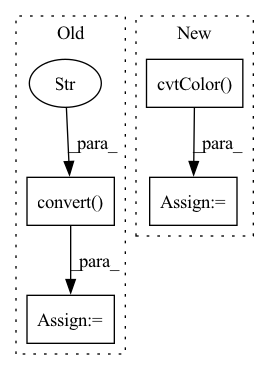

Pattern ID :16946

Before Change
print(f"Processing `{os.path.abspath(lr_image_path)}`...")
lr_image = Image.open(lr_image_path).convert("RGB")
hr_image = Image.open(hr_image_path).convert("RGB")
// Extract RGB channel image data
lr_tensor = imgproc.image2tensor(lr_image, range_norm=False, half=True).to(config.device).unsqueeze_(0)
hr_tensor = imgproc.image2tensor(hr_image, range_norm=False, half=True).to(config.device).unsqueeze_(0)
// Only reconstruct the Y channel image data.
with torch.no_grad():
sr_tensor = model(lr_tensor).clamp_(0, 1)
// Cal PSNR
sr_y_tensor = imgproc.convert_rgb_to_y(sr_tensor)
hr_y_tensor = imgproc.convert_rgb_to_y(hr_tensor)
total_psnr += 10. * torch.log10(1. / torch.mean((sr_y_tensor - hr_y_tensor) ** 2))
sr_image = imgproc.tensor2image(sr_tensor, range_norm=False, half=True)
After Change
// Save image
sr_image = imgproc.tensor2image(sr_tensor, range_norm=False, half=True)
sr_image = cv2.cvtColor(sr_image, cv2.COLOR_RGB2BGR)
cv2.imwrite(sr_image_path, sr_image)
// Cal PSNR
sr_image = sr_image.astype(np.float32) / 255.
sr_y_image = imgproc.bgr2ycbcr(sr_image, use_y_channel=True)
sr_y_tensor = imgproc.image2tensor(sr_y_image, range_norm=False, half=True).to(config.device).unsqueeze_(0)
In pattern: SUPERPATTERN
Frequency: 3
Non-data size: 4
Instances
Fragment ID: 56990277
Project Name: lornatang/esrgan-pytorch
Commit Name: 087e0c9bc621989889918b52b7c0dba9485c5fd6
Time: 2022-03-06
Author: liuchangyu1111@gmail.com
File Name: validate.py
M Class Name: AnonimousClass
N Class Name: AnonimousClass
M Method Name: main(0)
N Method Name: main(0)
M Parent Class:
N Parent Class:
M File Name: validate.py
N File Name: validate.py
M Start Line: 28
M End Line: 82
N Start Line: 30
N End Line: 91
'>
Before Change
print(f"Processing `{os.path.abspath(lr_image_path)}`...")
lr_image = Image.open(lr_image_path).convert("RGB")
hr_image = Image.open(hr_image_path).convert("RGB")
// Extract RGB channel image data
lr_tensor = imgproc.image2tensor(lr_image, range_norm=False, half=True).to(config.device).unsqueeze_(0)
hr_tensor = imgproc.image2tensor(hr_image, range_norm=False, half=True).to(config.device).unsqueeze_(0)
// Only reconstruct the Y channel image data.
with torch.no_grad():
sr_tensor = model(lr_tensor).clamp_(0, 1)
// Cal PSNR
sr_y_tensor = imgproc.convert_rgb_to_y(sr_tensor)
hr_y_tensor = imgproc.convert_rgb_to_y(hr_tensor)
total_psnr += 10. * torch.log10(1. / torch.mean((sr_y_tensor - hr_y_tensor) ** 2))
sr_image = imgproc.tensor2image(sr_tensor, range_norm=False, half=True)
After Change
// Save image
sr_image = imgproc.tensor2image(sr_tensor, range_norm=False, half=True)
sr_image = cv2.cvtColor(sr_image, cv2.COLOR_RGB2BGR)
cv2.imwrite(sr_image_path, sr_image)
// Cal PSNR
sr_image = sr_image.astype(np.float32) / 255.
sr_y_image = imgproc.bgr2ycbcr(sr_image, use_y_channel=True)
sr_y_tensor = imgproc.image2tensor(sr_y_image, range_norm=False, half=True).to(config.device).unsqueeze_(0)
total_psnr += 10. * torch.log10(1. / torch.mean((sr_y_tensor - hr_y_tensor) ** 2))
'>
Fragment ID: 56990247
Project Name: lornatang/srgan-pytorch
Commit Name: 231bd74d21d7f532fd746f4a1cb8fb3bc008c933
Time: 2022-03-03
Author: liuchangyu1111@gmail.com
File Name: validate.py
M Class Name: AnonimousClass
N Class Name: AnonimousClass
M Method Name: main(0)
N Method Name: main(0)
M Parent Class:
N Parent Class:
M File Name: validate.py
N File Name: validate.py
M Start Line: 28
M End Line: 82
N Start Line: 33
N End Line: 91
'>
Before Change
img = Image.fromarray(img)
img = img.convert("RGB")
img = self.transformations(img)
img = torch.Tensor(img[None, :])
After Change
-------
pitch, yaw, roll
img = cv2.cvtColor(img, cv2.COLOR_BGR2RGB)
img = Image.fromarray(img)
img.show()
img = self.transformations(img)
'>
Fragment ID: 56990284
Project Name: thohemp/6drepnet
Commit Name: 4316d9eae059adb99ae73b5b4156c569bb8e4097
Time: 2023-02-27
Author: tho.hemp@protonmail.com
File Name: sixdrepnet/regressor.py
M Class Name: SixDRepNet_Detector
N Class Name: SixDRepNet_Detector
M Method Name: predict(2)
N Method Name: predict(2)
M Parent Class:
N Parent Class:
M File Name: sixdrepnet/regressor.py
N File Name: sixdrepnet/regressor.py
M Start Line: 66
M End Line: 67
N Start Line: 65
N End Line: 67